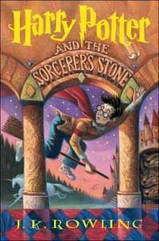
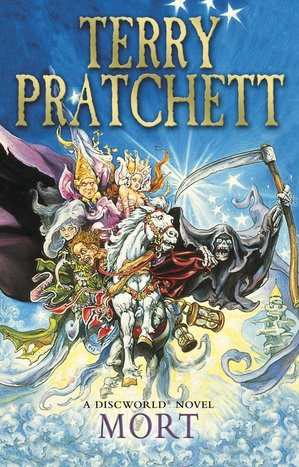

Fantasy Books
The best books and reviews




Harry Potter's life is miserable. His parents are dead and he's stuck with his heartless relatives, who force him to live in a tiny closet under the stairs.
But his fortune changes when he receives a letter that tells him the truth about himself: he's a wizard. A mysterious visitor rescues him from his relatives and takes him to his new home, Hogwarts School of Witchcraft and Wizardry.
After a lifetime of bottling up his magical powers, Harry finally feels like a normal kid. But even within the Wizarding community, he is special.
He is the boy who lived: the only person to have ever survived a killing curse inflicted by the evil Lord Voldemort, who launched a brutal takeover of the Wizarding world, only to vanish after failing to kill Harry.
Though Harry's first year at Hogwarts is the best of his life, not everything is perfect. There is a dangerous secret object hidden within the castle walls, and Harry believes it's his responsibility to prevent it from falling into evil hands.
But doing so will bring him into contact with forces more terrifying than he ever could have imagined.
Full of sympathetic characters, wildly imaginative situations, and countless exciting details, the first installment in the series assembles an unforgettable magical world and sets the stage for many high-stakes adventures to come.
Buy now on Amazon
Terry Pratchett's profoundly irreverent novels are consistent number one bestseller in England, where they have catapulted him into the highest echelons of parody next to Mark Twain, Kurt Vonnegut, Douglas Adams, and Carl Hiaasen.
In this Discworld installment, Death comes to Mort with an offer he can't refuse -- especially since being, well, dead isn't compulsory.
As Death's apprentice, he'll have free board and lodging, use of the company horse, and he won't need time off for family funerals.
The position is everything Mort thought he'd ever wanted, until he discovers that this perfect job can be a killer on his love life.
Buy now on Amazon
She was magical, beautiful beyond belief—and completely alone...
The unicorn had lived since before memory in a forest where death could touch nothing. Maidens who caught a glimpse of her glory were blessed by enchantment they would never forget.
But outside her wondrous realm, dark whispers and rumours carried a message she could not ignore: "Unicorns are gone from the world."
Aided by a bumbling magician and an indomitable spinster, she set out to learn the truth.
But she feared even her immortal wisdom meant nothing in a world where a mad king's curse and terror incarnate lived only to stalk the last unicorn to her doom...
Buy now on Amazon
One Ring to rule them all, One Ring to find them, One Ring to bring them all and in the darkeness bind them
In ancient times the Rings of Power were crafted by the Elven-smiths, and Sauron, The Dark Lord, forged the One Ring, filling it with his own power so that he could rule all others.
But the One Ring was taken from him, and though he sought it throughout Middle-earth, it remained lost to him. After many ages it fell into the hands of Bilbo Baggins, as told in The Hobbit.
In a sleepy village in the Shire, young Frodo Baggins finds himself faced with an immense task, as his elderly cousin Bilbo entrusts the Ring to his care.
Frodo must leave his home and make a perilous journey across Middle-earth to the Cracks of Doom, there to destroy the Ring and foil the Dark Lord in his evil purpose.
The first book of the trilogy by J.R.R. Tolkien, The Fellowship of the Ring, is a door through which you take a step into another world.
A world of a time either so long back or so long forward; characters who are ageless, but not receding in attributes; and colorful sceneries which you visit. All are not one bit limiting.
The author of this book originally meant for the series to be one huge book, but the editors were wise enough to know that it wouldn’t be comfortable trying to fit some 1,500 pages in your hands.
Before getting lost in The Fellowship of the Ring, I recommend reading The Hobbit. Reading The Hobbit just makes the serious stuff more sentimental and fluid.
Regardless if The Hobbit is read or not, The Fellowship of the Ring is a timeless treasure.
Buy now on Amazon